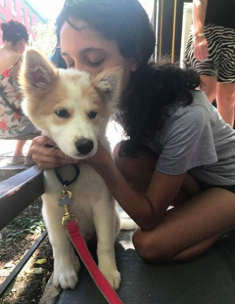

Korean K9 Rescue has been struck by a second stroke of good luck with another feature on thedodo.com!
This time we help inform people “How to Adopt a Dog From a Korean Meat Farm”.
thedodo takes us through the steps:
1. Find a rescue organization near you – That’s where Korean K9 Rescue comes in.
“We take fearful dogs, we take skittish dogs, we take the ones we see a chance of rehabilitation with further once they come here,” Boehler says. “Some of the dogs are not actively social or friendly right away, but we can see that potential in them with a good adopter.”
2. Fill out an application

“A lot of our dogs are Jindo-spitz mixes, and just the breed itself makes very good apartment dogs,” Boehler notes. “They’re very quiet, they’re not big barkers, and they’re very active outside — but in the apartment they can just be a lazy bum.”
3. Make sure you’re ready
“Normally a small, cute, fluffy dog from a puppy mill or pet store is seen as a pet, and mixed-breed dogs are defined as a dog that could be for eating or basically has no soul and is stupid,” Boehler says.
4. Prepare for an interview and home visit
“It’s a law that after five days they have to euthanize in the city shelters,” Boehler says. “So we have a very short window of time to pull these dogs out, and the ones that can be saved, we try to pull as many as we can.”
5. Meet the dog!
“People should know that if they come in to adopt a dog, they should be able to take a little time off work to introduce the dog to [his] new environment,” Boehler advises. “We always tell adopters to go slow and to not do too much too fast too soon with these dogs, because they do need to acclimate, as do most rescue dogs.”
6. Pay the adoption fee!
“Adoption fees vary depending on the organization. When adopting from Korean K9 Rescue, expect a fee of around $500, which helps to offset the cost of transporting the dog from Korea to the states. Korean K9 Rescue donates a portion of its fees to other rescue groups and activists who are fighting the dog meat trade in Korea.”
7. Bring home your new pal (and spend some time with him)
“It’s really critical the first three months that the adopter is prepared to socialize and spend time training and making the dog comfortable,” Boehler says. “Once this happens, I’ve seen these dogs make a complete turnaround from hiding in the crate to basically being the most outgoing dog in daycare.”
Read the full article here